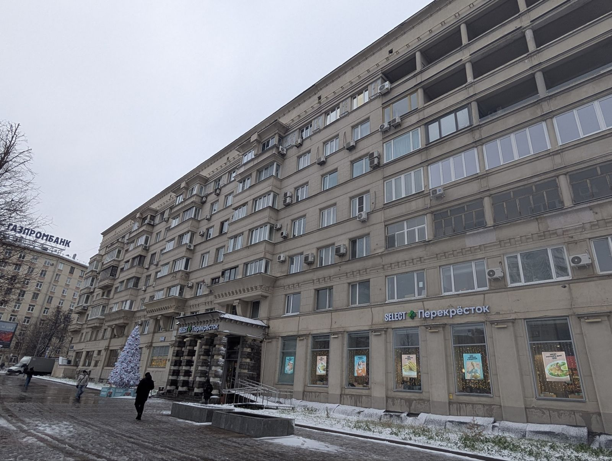
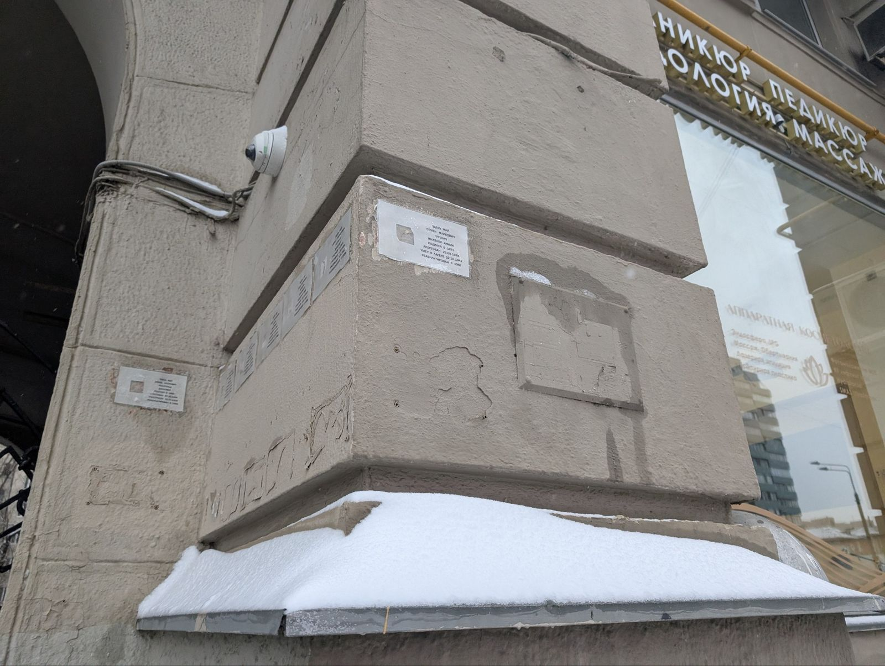
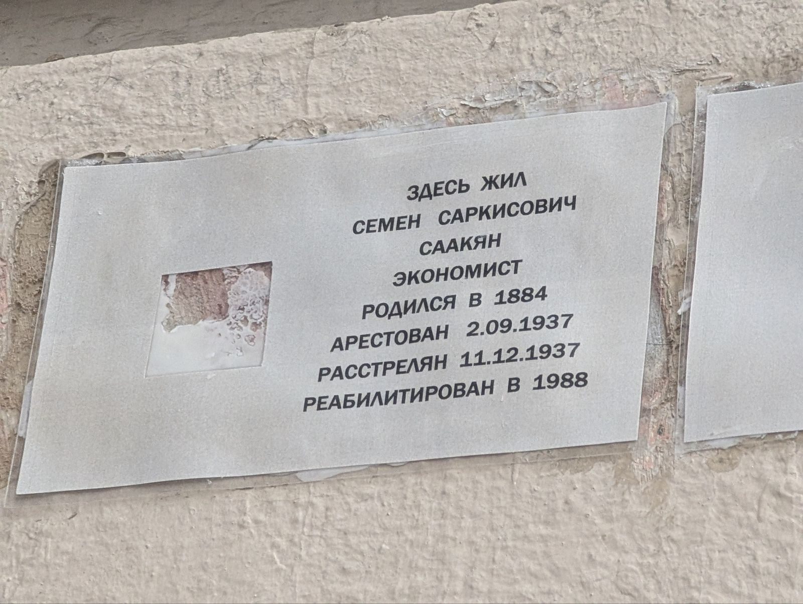

Дом
Москва, ул. Долгоруковская, 5, бывшая Каляевская. Кооперативный дом работников НКИД и НКВТ.
- Пайщики платили взносы, в том числе в иностранной валюте.
- Строили с 1929 по 1937 год (по сайту о доме — до 1939-го); проект несколько раз переделывали, самый известный из архитекторов — И. А. Голосов.
- В 1937 году дом лишили статуса кооператива.
- Аресты шли с 1933 по 1951 год, больше всего — в 1937–1938 годах. В квартиры арестованных часто вселялись семьи сотрудников госбезопасности.
- Сегодня на первом этаже — супермаркет и салон красоты; таблички висят на пилоне рядом с витриной салона.


Что такое
«Последний адрес»
Гражданский проект, начатый в 2014 году. Принцип — «одно имя, одна жизнь, один знак»: небольшую стальную табличку ставят на дом, который стал последним адресом человека до ареста. На ней — имя, профессия, даты рождения, ареста, гибели и реабилитации.
Табличку заказывает и оплачивает один человек — родственник или просто неравнодушный; нужно согласие жильцов дома. Первые четыре таблички в Москве появились именно на этом доме в декабре 2014 года.

Стена имён
В 2017 году на доме было 14 табличек, позже — 17. В ноябре 2026 года на фасаде осталось 7, и это бумажные копии. Под ними — контуры клея и отверстия от креплений.
Сохранившиеся · табличка на стене сейчас
Снятые · таблички на фасаде сейчас нет
«Снята» означает: её нет среди читаемых табличек на фасаде со стороны Долгоруковской в ноябре 2026 года.
Без таблички · знака на доме нет и не было
Остальные жильцы из мартиролога дома. Табличек «Последнего адреса» с их именами на фасаде нет, и в известных нам источниках они не упоминаются.
- Никифтидис-Орфанидис Христо Иванович
- Крейчи Фриц Рудольфович
- Жукова Мария Федосеевна
- Винцер-Вайцнер-Марцеллиш Иосиф-Самуил Генрихович
- Даян Георгий Миронович
- Эшба Ефрем Алексеевич
- Фишзон Валентина Яновна
- Писчиков Константин Андреевич
- Миронов-Пинес Борис Миронович
- Мнацаканов Азарий Айрапетович
- Котельников Иван Михайлович
- Винавер Владимир Николаевич
- Иодловский Александр Максимилианович
- Тамарин Антон Моисеевич
- Микадзе А. В.
- Магалиф Яков Мареевич
- Мануэльян Михаил Степанович
- Спектор Моисей Ильич
- Медник Моисей Нахимович
- Бессарабов Григорий Иванович
- Дмитриев Михаил Дмитриевич
- Астахов Георгий Александрович
- Заславский Анатолий Витальевич
- Асмус Эрик Адольфович
- Давыдов Зиновий Маркович
- Бошкович Юлиан Семенович
- Эмзин Макс Иванович
- Гальперин Яков Петрович
- Гандель Аврам Львович
- Ленгиель Юлий Осипович
- Резников Израиль Абрамович
- Шостак Агата Львовна
- Шостак Михаил Львович
- Мендельсон Абрам Самуилович
- Белаковский Абрам Исаевич
- Бронштейн Борис Александрович
- Тарский Владимир Леонидович
- Кемпнер Виктор Фалькович
- Геллер Владимир Александрович
- Похвалинский Борис Александрович
- Нуллер Лев Моисеевич
- Жуховицкий Эммануил Львович
- Белицкий Ефим Яковлевич
- Штерн (Хаймович) Софья Яковлевна
- Степанов Павел Николаевич
- Элисман Лев Георгиевич
- Ландсберг Владимир Ефимович
- Абрамсон Лазарь Меерович
- Фурман Клара Яковлевна
- Турбин Георгий Васильевич
- Ульрих Николай Николаевич
- Вайсбейн Борис Семенович
- Левин Михаил Ильич
- Стефанов Николай Васильевич
- Мнацаканова Эрна Феликсовна
- Бонтус Антон Антонович
- Туманов-Розенблюм Иосиф Рафаилович
- Пикман Яков Абрамович
- Рабинович Филипп Яковлевич
- Килевиц Фриц Фрицевич
- Казакевич Александр Исаакович
- Бабаян А. В.
- Мосина Нина Васильевна
- Рабинков Иосиф Семенович
- Вальтер Петр Петрович
- Окулович (Окулевич) Георгий Степанович
- Абрамов Сергей Иванович
- Цукерман Владимир Моисеевич
- Охтин-Юров Андрей Яковлевич
- Амброжис Болеслав Викентьевич
- Янсон Ян Эрнестович
- Забелышинский Хаим Моисеевич
- Шпиндлер Евсей Максимович
- Кубаткин Петр Николаевич
- Бокк И. А.
- Смирнов В. Е.
- Рожков И. И.
- Сквирский Борис Евсеевич
- Синкин Николай Андреевич
Порядок — по номерам квартир, как в мартирологе. По некоторым данным, табличек на доме было 17, а поимённо известны 15, поэтому у одного-двух человек из этого списка табличка, возможно, всё же была.
Копии
Когда стальные таблички сорвали, жильцы сами сделали картонные копии, потом стали печатать их на принтере. Копии срывали через несколько часов, и жильцы даже дежурили, чтобы узнать, кто это делает. Новые стальные таблички жильцы изготовили, но пока не вешают.
По Москве таблички «Последнего адреса» исчезают с фасадов с 2023 года, на их месте появляются бумажные копии, которые тоже срывают.
Перед тем, как его увели, отец подошел к моей кроватке, поцеловал меня и сказал: «Я скоро приду». Это «скоро» продлилось восемнадцать лет.
7 и 93
Память о жильцах этого дома держится исключительно на частной инициативе: родственников, новых жильцов дома или просто неравнодушных людей. Без них репрессированные были бы забыты.
Мартиролог дома ↗Сведения — по сайту проекта «Последний адрес», Википедии, материалам Д. Белановского (kaliayevskaya5.ru) и «Москвич Mag»; подробный список — в исследовании.
Фотографии — М. Носков, ноябрь 2026, без обработки ИИ. Тексты сверены с источниками; ИИ (Claude) использовался для редактуры и вёрстки.